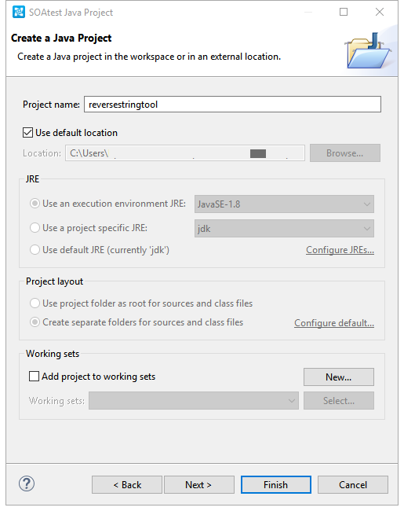

1. Overview
1.2. What you’ll create
The goal is to create and build a simple custom extension (jar file) for Parasoft SOAtest. This guide will outline the basic steps needed to get a bare bones custom extension built and ready for use in SOAtest.
For more information visit the Parasoft SOAtest User guide (see Using Custom Transports, Message Formats, and Tools): Parasoft SOAtest docs
1.3. What you need
-
15-30 minutes
-
Parasoft SOAtest 9.10+
-
Maven plugin m2e (or standalone Maven see maven download page)
1.4. Tutorial Outline
-
Setup
-
Create Java Project
-
Add Parasoft extension framework
-
-
Step 1
-
Create Java Class
-
Implement ICustomTool interface
-
-
Step 2
-
Create parasoft-extension.xml
-
Add UI field
-
Update metadata
-
-
Step 3
-
Add tool execution logic
-
-
Step 4
-
Update method to check if input is accepted
-
-
Step 5
-
Update method to check if tool has valid configuration and is ready to run
-
-
Final Steps
-
Build and package jar
-
Add jar to System Properties in SOAtest and restart
-
Add Custom tool, configure and run
-
2. Setup
There are multiple ways to create, build, and package a project that can be used within SOAtest. To follow along with the code in this tutorial it requires the Maven plugin (m2e) installed in SOAtest/Eclipse.
| Although the code/project for this tutorial is defined as a Maven project you can also create a basic SOAtest Java Project, which adds the 'com.parasoft.api.jar' (included in the SOAtest installation) to the project build path. Basic steps are also shown below (see option 2). |
2.1. Create project
2.1.1. Maven project instructions (option 1)
-
Switch to the Java perspective (menu: Window > Perspective > Open Perspective > Java)
-
Select a wizard
-
Open New Project wizard (menu: File > New Project), select Maven Project and click Next
Figure 2. New Project Wizard screen
-
-
New Maven project
-
Create a Maven project and configure the location where you want to save the project and click Next
Figure 3. New Maven project screen
-
-
Configure project
-
Enter some basic data for your project, set packaging as jar and click Finish
Figure 4. Configure project screen
-
2.1.2. SOAtest Java project instructions (option 2)
-
Switch to the Java perspective (menu: Window > Perspective > Open Perspective > Java)
-
Select a wizard
-
Open New Project wizard and navigate to SOAtest Custom Development (menu: File > New Project > SOAtest > Custom Development), select SOAtest Java Project and click Next
Figure 5. New Project Wizard screen
-
-
Configure project
-
Enter project information, and click Finish
Figure 6. Configure project screen
-
2.2. Add Parasoft extension framework
| If using SOAtest Java project instructions (option 2) you can skip this step. |
Update the pom.xml (if using the Maven Project method) to include the Parasoft Maven repository and Parasoft Extension Framework:
<dependencies>
<dependency>
<groupId>com.parasoft.soavirt</groupId>
<artifactId>com.parasoft.api</artifactId>
<version>9.10.5</version> (1)
<scope>provided</scope>
</dependency>
</dependencies>
<repositories>
<repository>
<id>ParasoftMavenPublic</id>
<name>Parasoft Public Repository</name>
<url>http://build.parasoft.com/maven/</url>
</repository>
</repositories>| 1 | This should match the version of SOAtest you are using |
After adding some additional properties the pom.xml should look something like this:
<project xmlns="http://maven.apache.org/POM/4.0.0" xmlns:xsi="http://www.w3.org/2001/XMLSchema-instance"
xsi:schemaLocation="http://maven.apache.org/POM/4.0.0 http://maven.apache.org/xsd/maven-4.0.0.xsd">
<modelVersion>4.0.0</modelVersion>
<groupId>com.testified.soavirt.tool</groupId>
<artifactId>reversestringtool</artifactId>
<version>0.0.1-SNAPSHOT</version>
<name>reversestringtool</name>
<description>A simple tool to reverse a string</description>
<properties>
<project.build.sourceEncoding>UTF-8</project.build.sourceEncoding>
<maven.compiler.source>1.8</maven.compiler.source>
<maven.compiler.target>1.8</maven.compiler.target>
</properties>
<dependencies>
<dependency>
<groupId>com.parasoft.soavirt</groupId>
<artifactId>com.parasoft.api</artifactId>
<version>9.10.5</version>
<scope>provided</scope>
</dependency>
</dependencies>
<repositories>
<repository>
<id>ParasoftMavenPublic</id>
<name>Parasoft Public Repository</name>
<url>http://build.parasoft.com/maven/</url>
</repository>
</repositories>
</project>After you save the pom.xml and update the Maven project (Alt+F5) the Parasoft Extension Framework (com.parasoft.api-<version>.jar) is added to your project as a Maven Dependency:
3. Step 1
3.1. Create Java Class
Create a new Java Class in a package of your choice in your project Java source folder:
package com.testified.soavirt.tool;
public class ReverseStringTool {
}3.2. Implement ICustomTool interface
Add the following import to your Java Class:
import com.parasoft.api.tool.*;Modify your class to use the ICustomTool interface: implements ICustomTool
When you save the file, Eclipse will display an error. To fix this you can hover over the Class name and select 'Add unimplemented methods' from the quick fix popup (keyboard shortcut: Ctrl+. then Ctrl+1 then Enter will do the same thing). Your Class should look something like this:
package com.testified.soavirt.tool;
import com.parasoft.api.tool.*;
public class ReverseStringTool implements ICustomTool {
public boolean acceptsInput(IToolInput arg0, ICustomToolConfiguration arg1) {
// TODO Auto-generated method stub
return false;
}
public boolean execute(IToolInput arg0, IToolContext arg1) throws CustomToolException, InterruptedException {
// TODO Auto-generated method stub
return false;
}
public boolean isValidConfig(ICustomToolConfiguration arg0) {
// TODO Auto-generated method stub
return false;
}
}4. Step 2
4.1. Create parasoft-extension.xml
To define the tool we create a parasoft-extension.xml (New > Other > XML File) file in the project Resources source folder. A basic skeleton looks like the following:
<?xml version="1.0" encoding="UTF-8"?>
<extension xmlns="urn:ocm/parasoft/extensibility-framework/v1/extension">
<class></class>
<tool xmlns="http://schemas.parasoft.com/extensibility-framework/v1/tool"></tool>
<form xmlns="urn:com/parasoft/extensibility-framework/gui"></form>
</extension>| Multiple extensions can be bundled together (e.g. you may want to bundle a custom tool with related custom message extension and custom transport extension rather than create 3 separate custom extensions) to create an uber custom extension, which is out of scope for this simple guide. |
-
The
<extension>element defines the type of custom extension we are building and some additional metadata, which will be visible in SOAtest. -
The
<class>element defines the main entry point of our custom tool. -
The
<tool>element defines the settings of the custom tool and has many additional (optional) attributes, but for the sake of simplicity only an output attribute is included, which will be used when we generate the reversed string. -
The
<form>element defines the UI of the tool. We will add a standard section (Main Settings) in the UI, and define a single field (id = stringtoreverse) with a label (label = Reverse me:) and a normal field (type = string). The type can be set to a string, xpath, or password (value is obfuscated and encrypted when saved).
| More detailed information can be found in the Parasoft SOAtest documentation: Defining parasoft-extension.xml |
4.2. Update metadata
The extension element is updated to include the type, name, and description. This information will be displayed in certain screens in the SOAtest UI (e.g. Add New Test… wizard screen)
<extension xmlns="urn:ocm/parasoft/extensibility-framework/v1/extension"
type="tool" name='Reverse String Tool' description='Tool to reverse any give input string.'>4.3. Update class
The class element is updated to reference the Java Class (in the format of 'package_name.class_name') we created earlier.
<class>com.testified.soavirt.tool.ReverseStringTool</class>4.4. Add output to tool
A single output is added to the tool, which we can use when we want to do something with the output.
<outputs>
<output key="response" name="Modified Response" />
</outputs>4.5. Add UI field
As noted above, we update the form element to include a section, which we will label 'Main Settings' and a single field with id of 'stringtoreverse' (we use this id to get the value entered in the field) and a label 'Reverse me:'.
<form xmlns="urn:com/parasoft/extensibility-framework/gui">
<section label="Main Settings">
<field id="stringtoreverse" label="Reverse me:" type="String" />
</section>
</form>| If you want to support multiple languages you can define and localize the text so it will appear in the correct language for the user: Localizing GUI Text |
The full parasoft-extension.xml should look something like this:
<?xml version="1.0" encoding="UTF-8"?>
<extension xmlns="urn:ocm/parasoft/extensibility-framework/v1/extension"
type="tool" name='Reverse String Tool' description='Tool to reverse any give input string.'>
<class>com.testified.soavirt.tool.ReverseStringTool</class>
<tool xmlns="http://schemas.parasoft.com/extensibility-framework/v1/tool">
<outputs>
<output key="response" name="Modified Response" />
</outputs>
</tool>
<form xmlns="urn:com/parasoft/extensibility-framework/gui">
<section label="Main Settings">
<field id="stringtoreverse" label="Reverse me:" type="String" />
</section>
</form>
</extension>| This is a very basic layout of parasoft-extension.xml. See the following for a list of additional attributes that can be defined for each element: Defining parasoft-extension.xml |
5. Step 3
We need to update the execute method in our Class as this will contain the main functionality of our tool. After cleaning up the auto-generated method stub it currently looks like this:
public boolean execute(IToolInput input, IToolContext context) throws CustomToolException, InterruptedException {
return false;
}5.1. Get the configuration for the Tool
The context provides access to the UI configuration and the output manager. For the first step in the method we get the configuration as follows:
ICustomToolConfiguration config = context.getConfiguration();5.2. Get the value from the field in the UI
Now we have access to the configuration we can simply get the string for the field in the UI, which we set the id as 'stringtoreverse':
String inputString = config.getString("stringtoreverse");5.3. Reverse the string
We want to take the value of the input string and reverse it. One way of doing this is as follows:
String reversedString = new StringBuilder(inputString).reverse().toString();|
You can print a value in the SOAtest console using the Application.showMessage() method, which can be useful for debugging values in your custom tool:
|
5.4. Pass the output so chained tools can use it
We want to pass the reversed string as output to chained tools, and as it’s simple text we use DefaultTextInput (default implementation of ITextInput interface) to pass the data along. We include the data (reversed string), a character encoding (e.g. UTF-8) and a mimetype (e.g. text/plain) when we construct the new instance of DefaultTextInput.
DefaultTextInput output = new DefaultTextInput(reversedString, "UTF-8", "text/plain");To complete the execution logic, we get the output manager from the context and run the output using with the following:
-
Output key (we defined this in our parasoft-extension.xml as response)
-
Instance we created of DefaultTextInput (containing the reverse string, encoding, and mimetype)
-
Context (this will return true if all chained tools pass, or false if one of the chained tools fails)
return context.getOutputManager().runOutput("response", output, context);The complete execute method should look similar to this:
public boolean execute(IToolInput input, IToolContext context) throws CustomToolException, InterruptedException {
ICustomToolConfiguration config = context.getConfiguration();
String inputString = config.getString("stringtoreverse");
String reversedString = new StringBuilder(inputString).reverse().toString();
com.parasoft.api.Application.showMessage("string = " + reversedString);
DefaultTextInput output = new DefaultTextInput(reversedString, "UTF-8", "text/plain");
return context.getOutputManager().runOutput("response", output, context);
}6. Step 4
6.1. Update acceptsInput method
We also need to update the acceptsInput method so we can execute the tool. After cleaning up the auto-generated method stub it currently looks like this:
public boolean acceptsInput(IToolInput input, ICustomToolConfiguration settings) {
return false;
}For this simple example we will always accept input so we can change to value to return true, so the execute method can be called.
public boolean acceptsInput(IToolInput input, ICustomToolConfiguration settings) {
return true;
}| For a more complicated custom tool you might want to do some validation on the input before you execute it. |
7. Step 5
7.1. Update isValidConfig method
The final method to update is the isValidConfig() method. This method determines whether or not the UI configuration is set up correctly before run time. If this method returns false, the tool will not be able to run and will appear grayed out in the UI. After cleaning up the auto-generated method stub it currently looks like this:
public boolean isValidConfig(ICustomToolConfiguration settings) {
return false;
}| This is useful if your tool has required fields and you don’t want it to be runnable until the user enters values in those fields (e.g. connecting to a server might require a hostname and port) |
In our example we only have a single field and for the purposes of this tutorial we will allow any non-empty (including spaces) string, so we will check if the field has valid input and return the Boolean accordingly. When this is true our tool can be executed.
public boolean isValidConfig(ICustomToolConfiguration settings) {
return !settings.getString("stringtoreverse").isEmpty();
}7.2. Recap
Our custom tool is now complete. The Java Class file should look something like this:
package com.testified.soavirt.tool;
import com.parasoft.api.tool.*;
public class ReverseStringTool implements ICustomTool {
public boolean acceptsInput(IToolInput input, ICustomToolConfiguration settings) {
return true;
}
public boolean execute(IToolInput input, IToolContext context) throws CustomToolException, InterruptedException {
ICustomToolConfiguration config = context.getConfiguration();
String inputString = config.getString("stringtoreverse");
String reversedString = new StringBuilder(inputString).reverse().toString();
com.parasoft.api.Application.showMessage("string = " + reversedString);
DefaultTextInput output = new DefaultTextInput(reversedString, "UTF-8", "text/plain");
return context.getOutputManager().runOutput("response", output, context);
}
public boolean isValidConfig(ICustomToolConfiguration settings) {
return !settings.getString("stringtoreverse").isEmpty();
}
}Our finished project consists of the following files:

| For more complicated tools you may end up with more files in your project. e.g., you might decide to have multiple Java Classes, or include a logo for your tool, as well as include some additional property/localization files. |
8. Final Things
8.1. Build the project
Now the code is complete the next step is to build and package all the files in a jar file.
8.1.1. Build with maven (option 1)
If using the Maven project use the following steps to package the jar file.
-
Select your project, navigate to Run As menu, and select Maven build…
-
In the build configuration add package to the goals field
-
Click run to build the project. You should see the following in the console:
|
If you have standalone Maven installed and prefer using the command line you can also build using the following:
|
By default the jar will be built in the target folder in the project.
8.1.2. Export as jar (option 2)
If using a SOAtest Java project use the following steps to package the jar.
-
Select your project, navigate to File menu, and select Export
-
Select Java > JAR file
Figure 12. Export -
Select parasoft-extension.xml and check Export generated class files and resources
-
Select an export destination then click Finish
Figure 13. JAR Export
8.2. Run the tool in SOAtest
-
Switch to the SOAtest perspective (menu: Window > Perspective > Open Perspective > Parasoft SOAtest)
-
From the menu select Parasoft > Preferences and navigate to the System Properties folder.
-
Click Add JARs… navigate to your project and locate the jar you built
Figure 14. Add JAR to SOAtest -
Click OK and restart SOAtest (File > Restart)
-
Create a new tst (or use an existing one)
-
Select a Test Suite, right-click and navigate to Add New > Test …
-
In the Add Test dialog select Standard Test, scroll down in the New Tool pane until you find the custom tool and click Finish
Figure 15. Add new toolThe tool name and description comes from the parasoft-extension.xml we configured early in the project. -
Add some text in the Reverse me field and save the editor
Figure 16. Configure tool -
Run the test
-
The test completes
| The console also prints out the reversed string using the Application.showMessage() method we included in our code. |
To be more useful we can chain an output tool to use the output in other tests. For a real world example the tool may have returned a JSON string, so we could chain a JSON tool (e.g. JSON Data Bank or JSON Assertor) to do something meaningful with the data. Here’s a simple Edit Tool chained to our custom tool showing the output the tool sent (in this case it was the reversed string).
8.3. Get the code
To get the full code, open a terminal, browse to a convenient location for your project, and type
git clone https://github.com/testified/soatest-reversestringtool.git
Happy testing! :-)